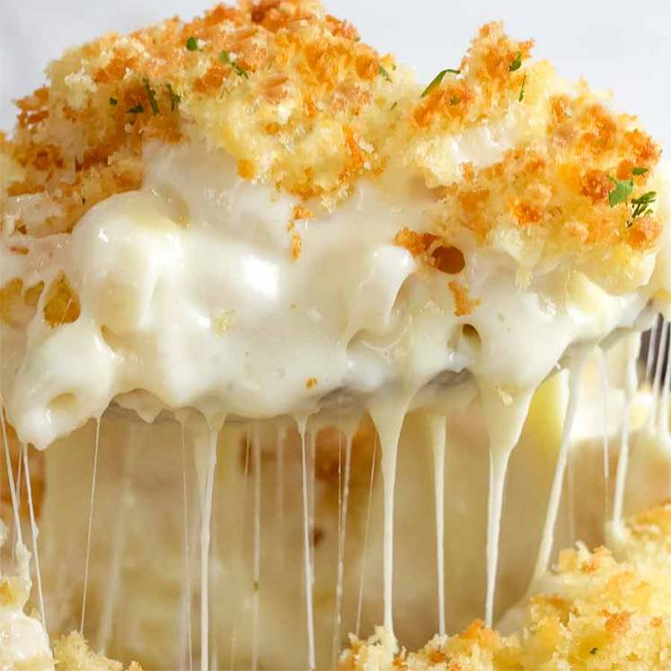

Baked Mac and Cheese

Description
The ultimate comfort food; Mac and Cheese.
Super easy and convenient to make.
Servings:6-8 servings
Ingredients
Macaroni
- 250g elbow pasta
- 1 tbsp unsalted butter
Topping
- 2/3 cup panko breadcrumbs
- 2 tbsp unsalted butter
- 1/4 tsp salt
Sauce
- 4 tbsp unsalted butter
- 1/3 cup flour
- 3 cups milk
- 2 cups freshly shredded cheddar cheese
- 1 cup freshly shredded mozzarella cheese
- 3/4 tsp salt
Seasoning
- 1 tsp garlic powder
- 1/2 tsp onion powder
- 1/2 mustard powder
Directions
Pasta
- Cook pasta
Bring a large pot of water to boil, add macaroni. Cook for mentioned time minue 1 minute
- Toss in butter
Drain, return pasta to put and add butter. Toss unitl melted. Set aside to cool.
Topping
- Mix together topping. Set asid.
Sauce
- Preheat Oven to 350 degrees Fahrenheit
- Make roux:
In a large saucepan, melt butter over medium heat. Add flour and cook.
Stirring constantly for 1 minute
- Add milk and mix to disolve the paste into the milk until lump free
- Add seasonings
- Thicken sauce:
Cook, stirring regularly for 5-8 minutes until thickened to a cream consistency
- Add Cheese.
Remove from stove, add cheese and stir
- Salt to taste
Assembling
- Pour Sauce intto ppot with Macaroni. Stir quickly, then pour back into baking dish
- Sprinkle with breadcrumb topping
- Bake for 25 minutes until the top is light golden
- Serve
Nutritional Facts
Per Serving:
551 calories; 23g protein; 48g carbohydrates;
29g fat; 89mg cholesterol; 847mg sodium; 8g sugar